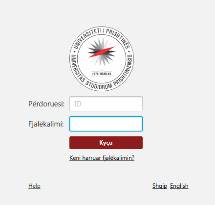

Duke shkruar numrin e ID dhe fjalëkalimin me të cilin keni qasje në platformë:
Pasi që jeni kyçur mund të zgjedhni njërin nga opcionet e dhëna më poshtë:

Përmbajtja e paraqitur më poshtë është tabela e orarit bazuar në zgjedhjet tuaja, të gjitha informacionet jepen nga administratori i platformës.